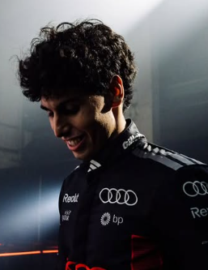

Gabriel Bortoleto
Gabriel Bortoleto
Team: Audi F1 Team
Team Principal: Andreas Seidl
Number: 5
Nationality: Brazil
Debut: 2026
Born: 14 October 2004
History: Brazilian driver Gabriel Bortoleto arrived in Formula 1 after a highly successful junior career that showcased both consistency and intelligence under pressure. Following championship-winning campaigns in the lower categories, Bortoleto impressed teams with his race management, smooth driving style, and rapid adaptation to new machinery. Joining Audi, he represented one of the most exciting young Brazilian talents to reach Formula 1 in many years and entered 2026 with significant expectations surrounding his future potential.
